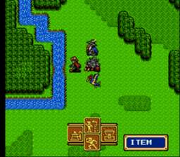
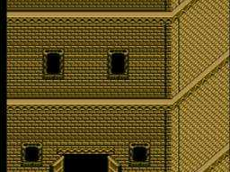
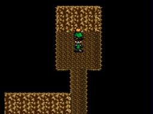
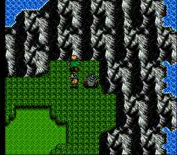
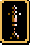
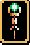
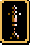
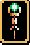

미스릴
게임진행중 돌맹이같이 생긴 아이템들을 하나씩은 얻으실겁니다.
이것이 바로 미스릴이라고 불리우는 돌맹이입니다.
현재까지 알려진 미스릴의 숫자는 15개입니다.
이 미스릴을 모으셔서 게임후반에 아주 강력한 무기를 만드실수가 있습니다.
물론 저주무기가 더 공격력은 세지만 저주라서 에너지달고 자주 얼고
정말 비추천이기 때문에 미스릴무기가 가장 쎈 무기라고 해도 틀린소리는 아닙니다.
그럼, 일단 미스릴은 어떻게 사용해야할까요?
우선은 드라이스톤을 얻으셔야겠죠. 드라이스톤은 요정의숲옆에 있는 드워프광굴의
불쏘시개에 있답니다.


그다음, 게임후반에 가셔서 레드바론까지 무찌르신후 북쪽에 있는 강가쪽으로 가보면
약간 납작한 강물줄기가 있는데 그곳에서 드라이 스톤을 쓰시면 물이 마르면서
드워프마을로 들어가실수가 있습니다. 반드시 A버튼을 누르셔서 메뉴를 여신다음 Item(아이템) 메뉴를 선택하신다음,
Use(사용)메뉴를 선택하시고 이 아이템을 선택하셔야합니다. C버튼으로는 안됩니다.

들어가신후 위로 올라가시면 계단이 세개가 'ㄱ'자 모양으로 있습니다.(언덕쪽의 계단은 무시하고요.)
가장 왼쪽으로 들어가신후, 바로 아래쪽의 계단으로 또 올라갑시다. 그런다음 위로 향하시면
또 계단이 있습니다. 그 계단으로 들어가시면 드워프 대장간이 있는것입니다.
대장간과 이야기 하시면 이제 미스릴무기를 만드실수 있는것입니다.
그럼,이제 15개의 미스릴이 대충 어디에 있는가 말씀드리겠습니다.

#1.그란실성에서 서쪽계단을 통해가는 고대의탑의 뒷쪽을 샛길로 향해 올라가신후
위를 향하시고 C버튼을 눌러가시면서 찾아보시면 있습니다. 그란실이 지진후 무너지면 다시는 못얻습니다.
#2.그란실/그라운드실의 남쪽에 있는 고대신전(성검,포스블래이드를 얻는곳입니다)옆의 삐죽 튀어난 산줄기에 있습니다.

#3.갈람성에서 슬래이드와 함께 탈출한 통로의 맨 윗쪽으로 막힌길에 있습니다.
#4.그란실에 지진이 났을때 학교쪽에서 가까운 갈라진 구멍을 조사하시면 찾으실수 있습니다.
이때 입수하시지 못하신다면 다시 입수할 방법은 없습니다.
#5.새로 정착된 그란실의 바로 오른쪽에 있는 마을인 리블마을의 놀이터 중앙에서 찾으실수 있습니다.
#6.리블마을에서 홉고블린동굴을 향하는도중 다리가 있습니다. 건너신다음 윗쪽의 쑥 들어간 산등어리를 뒤지시면 있습니다.

#7.핫산마을에서 미스릴을 두개 얻으실수 있는데 첫번째것은 잘 안보이지만 열린 담길로 들어가셔서 상자를 뒤지시고...
#8.두번째것은 부두쪽의 통나무통에서 얻으실수 있습니다.


#9.드워프광굴의 옆에있는 요정의 숲을 왼쪽의 숲길로 해서 시계방향으로 올라가셔서 기합의구슬이 들어있는 상자를 지나
오른쪽으로 가셔서 이제 아랫쪽의 보너스전투입구 가까이에서 미스릴이 있는 보물상자를 보실수 있습니다.
(일본판은 지도가 다르다고 들었습니다.)


#10.하피연못전투후 엘릭이 열어준 크리드의 저택으로 향하는굴에서 어둠에 숨겨진 비밀통로가 있습니다.
거기서 또 비밀통로가 있는데 보물상자가 3개가 있는쪽으로 향하는 어두운 통로의 가운데에서
바로 아랫쪽으로 내려가시면 미스릴을 얻으실수 있습니다.

#11.크리드의저택의 북동쪽 모서리에 있는 산등어리에서 북쪽으로 쑥 들어간곳의 정 가운데를 뒤지시면 있습니다.
#12.파카론성의 북서쪽에 옆에 자갈이 있고 나머지는 가려진 부분이 있는데, 거기로 들어가신후 계단을 내려가시면
보물상자안에 있습니다.

#13.파카론/모온에서 트리스탄쪽으로 가는길에 뾰족하게 튀어나온 산쪽을 뒤지시면 미스릴이 있습니다.

#14.트리스탄의 미튤라신전안에서 동쪽 보물상자에 있습니다.
#15.쉴라를 얻으신 도장에서 오른쪽 수풀로 가시면 보물상자가 있습니다.
이제 미스릴을 모으셨다면 대장간에게 대화를 합시다. 우선 누구의 무기를 만들지 대충 생각하시길 바랍니다.
당연한말이지만 전직을 아직 안하셨다면 쓰실수가 없습니다.
일단 보우이는 권장하지 않습니다. 게임후반에 어떠한 미스릴무기보다도 좋은 포스블래이드를 얻으니까요.
피터,게르할트,키위,징크,클라우드, 이들 역시 무기를 쓰지 않기 때문에 미스릴 무기를 만들수 없습니다.
마법계열 캐릭터들은 좀 더 생각해봐야하는데 사실 이들의 주특기는 공격력이 아니기 때문에
공격력을 높힐 생각으로 미스릴무기를 장착하시는건 권장하지 않습니다. 대신 MP가 일찍 떨어지는
마법계열 캐릭터들이 있다면 MP를 턴마다 2씩 차는 미스테리 지팡이를 만들어주시는것을 권장합니다.
만약 여러캐릭터들의 레벨업을 하실 생각이라면, 한번의 전투에 거의 모든 켄타우르스족/드워프족/궁수
들을 가져가실 생각이 아니시라면 무기종류당 두개정도씩만 만드셔서 서로 전투마다 바꾸어서
나눠쓰시게 하시는것도 한 방법입니다. 역시 밸런스계열의 캐릭터들을 원하신다면 매스터멍크의
미스릴무기 대신 다른 무기들을 만드시는게 좋겠지요. 어차피 매스터 멍크들은 미스릴무기가 없어도
강합니다. 그리고 저주무기를 적어도 하나라도 쓰실 계획이시라면 미스릴무기는 다른 캐릭터에게
만들어줄수 있겠지요. 어쨌든 선택은 자유입니다.
이제 더욱 어려운 부분은 자신이 원하는 미스릴 무기를 얻는 부분입니다. 대장간이 하나의 미스릴로
만드는 무기는 랜덤입니다. 한번 방문하실때마다 4개까지의 무기를 만드실수 있지만
여러분 자신이 원하는 무기를 4개 모두 만드는 확률은 거의 희박합니다.
그렇기때문에 일단 한번 방문하실때마다 하나씩만 주문을 맡깁시다. 드워프마을 주위의 신부에게
일단 저장을 하시고요. 주문을 맡기신후 다시 계단을 나가신후 오른쪽 출구로 나가시면
드워프마을을 나가시게 됩니다. 그런다음 다시 들어가셔서 대장간으로 다시 가셔서
대화를 합시다. 그럼 무기를 줄겁니다. 거의 대부분 여러분들이 원하시는 아이템을
주지 않을겁니다. 이건 왜 그러냐면 좋은 무기가 나올 확률은 낮고 쿠사리 무기가 나올
확률이 높기 때문입니다. 샤이닝포스센트럴의 무기(Moogie)님의 공략에 따르면 각 클래스에 가장 좋은
미스릴무기가 나올 확률은 4%이며, 두번째로 좋은 미스릴무기가 나올 확률은 22%, 세번째로
좋은 미스릴무기가 나올 확률은 26%, 가장 나쁜 미스릴무기가 나올 확률이 48%라고 합니다.
즉, 슬래이드를 예를 들때 기사름이 나올 확률이 4%이며, 크리티컬 소드가 나올 확률이 48%
라는뜻입니다. 물론 운이 좋으시면 한번에 기사름이 나올수도 있습니다...
바로 제가 그랬거든요. ㅡ,.ㅡ 정말 황당했습니다. 처음 미스릴 무기를 만들때
기사름이 나오기 엄청 힘들다는 소문을 듣고 각오하고 했는데...한번에...에헤헤^^;
만약 원하는 무기가 나오지 않으셨다면 로드를 하시고 원하시는 무기가 나오실때까지
계속하셔야합니다. 물론 정말 힘든 작업이지만 꾸준히 노력을 하시면 원하시는 무기들을
전부 얻으실수 있습니다.~ 원하시는 무기들을 얻으시길~
대장간옆에서 C버튼을 눌러 대화를 합시다.
"대장간 : 드워프 대장간에 온것을 환영합니다! 아주 진귀한 재료를 가지고 계시다면 아주 굉장하고
특별한 무기를 만들어줄수 있습니다. 무슨 재료를 가지고 계시나요?"
미스릴을 가지고 있는 캐릭터를 선택하신다음 미스릴 아이템을 선택하세요.
"대장간 : 누구의 무기를 만들어줄까요?"
무기를 만들어주고 싶은 캐릭터를 선택합시다. 키위,피터,게르할트,징크,클라우드는 무기를
만들수 없습니다.
"대장간 : __________에게 사용될것이군요! 5000 금화가 필요합니다. 괜찮으십니까?"
C버튼을 누르셔서 "예"라고 선택합시다. 돈이 충분히 있어야겠져.
"대장간 : 좋습니다! 곧 다시 오시길 바랍니다. 깜짝 놀래켜드리겠습니다!"
"대장간 : 또 필요하신것이 없으십니까?"
하나씩만 필요할것이니 B버튼을 눌러서 "아니오"라고 선택합시다.
"대장간 : 감사합니다!"
이제 마을을 떠났다가 다시 돌아오셔서 미스릴무기를 얻읍시다.
"대장간 : 기다리고 있었습니다! 이 __________을/를 드리겠습니다. 정말 굉장하지 않나요?! 누가 가져가겠습니까?"
원하시는 물건이시라면 받고 원하시던 무기신지 확인하시고 원하시지 않은 무기시라면 다시 로드하세요.
미스릴무기
검 (보우이,루크,스크리치,레몬,바론으로 전직한 쟈하 혹은 랜돌프)
*크리티컬소드는 슬래이드도 장착할수 있습니다.
*레벤터는 보우이만 장착할수 있습니다.
크리티컬 소드 (Critical Sword)
공격력 : +32
장점 : 가끔 더욱 강력한 공격을 함
단점 : 가끔 더욱 강력한 공격을 해도 대부분의 경우엔 다른 미스릴검보다 훨씬 약한 공격을 함
설명 : 가장 약한 미스릴검입니다. 이건 얻을수도 있는것입니다. 가끔 더욱 강력한
공격을 한다해도 대다수의 공격력을 낮추실 필요는 없다고 생각합니다.
배틀소드 (Battle Sword)
공격력 : +35
장점 : 크리티컬소드보단 공격력이 높음
단점 : 카운터소드보단 공격력이 낮음 ㅡ,.ㅡ
설명 : 개인적으로 크리티컬소드보다 더 사용하실 이유가 없는 검이라고 생각합니다.
카운터 소드 (Counter Sword)
공격력 : +39
장점 : 보우이와 슬래이드를 제외한 검사들에겐 가장 좋은 무기/맞을때 가끔 카운터공격도 함
단점 : 카운터효과보단 크리티컬효과가 더 좋음
설명 : 루크와 스크리치에게 가장 좋은 무기라고 생각합니다.
레반터 (Levanter)
공격력 : +42
장점 : 블래이즈3를 쓸수있음
단점 : 곧 포스블래이드를 얻음. 보우이만 쓸수 있음
설명 : 포스블래이드를 얻을때까지의 두전투에는 가장 강한 검이긴 합니다만...미스릴이 아깝습니다.
멋있게 생겼긴 하죠...
일본도 (슬래이드 전용)
일본도 (Katana)
공격력 : +34
장점 : 전혀 없습니다.
단점 : 슬래이드가 가질수 있는 일본도중에 가장 약합니다.
설명 : 간단합니다. ㅡ,.ㅡ 기사름 얻으세요.
닌자 일본도 (Ninja Katana)
공격력 : +39
장점 : 일본도보단 좋습니다. ㅡ,.ㅡ
단점 : 기사름보단 나쁩니다.
설명 : 역시...간단합니다. ㅡ,.ㅡ 기사름 얻으세요.
기사름 (Gisarme)
공격력 : +42
장점 : 슬래이드가 쓸수 있는 가장 강력한 검입니다. 가끔가다 적을 한방에 썰어버릴수도 있습니다.
단점 : 나오기 겁나 힘듭니다.(전 아녜여^o^~뻑!) 적을 썰어버리면 경험치 아깝습니다.
설명 : 샤이닝 포스2 미스릴 무기를 대표하는 무기가 아닌가싶습니다.
도끼 (가이안,레몬,쟈하,랜돌프)
불도끼 (Heat Axe)
공격력 : +32
장점 : 블래이즈 레벨2를 사용하실수 있습니다.
단점 : 기사름이 미스릴무기중 최강무기라면 불도끼는 최고로 꼬라먹은 무기입니다. 나오기도 엄청 잘 나오지요 ㅡ,.ㅡ
설명 : 불도끼가 한번 나오실때마다 스트레스레벨을 조심하시기 바랍니다 T_T;
아틀라스 액스 (Atlas Axe)
공격력 : +35
장점 : 블래이즈 레벨3를 사용하실수 있습니다.
단점 : 전투에서 얻으실수도 있는것입니다. 미스릴낭비에요~
설명 : 불도끼만큼 화딱지나지는 않지만...사실, 불도끼와 거기서 거기입니다. ㅡ,.ㅡ 마법이 필요하시다면
한번 생각해보시길.
그라운드 액스 (Ground Axe)
공격력 : +39
장점 : 기동력(MOV)이 +1 올라갑니다.
단점 : 룬액스보단 약합니다.
설명 : 이제야 드디어 만들어볼만한게 나옵니다. 확실히 이것보다 더욱 공격력이 강한 도끼가 있긴합니다.
하지만 드워프캐릭터들의 기동력은 어떠세요? 형편없이 낮아서 전투도 제대로 못할정도라면 오히려 이게
낫다고 생각합니다.
룬 액스 (Rune Axe)
공격력 : +42
장점 : 가장 강력한 도끼입니다. 디톡스 레벨1도 사용하실수 있습니다.
단점 : 그라운드 액스의 기동력강화가 없습니다.
설명 : 기동력에 불만이 없으시다면 가이안,레몬,쟈하,랜돌프에게 최강의 미스릴무기입니다.
창/투창 (체스터,릭,에릭,히긴스,쟈로)
발키리 (Valkyrie)
공격력 : +33
장점 : 부스트 레벨1을 사용하실수 있습니다.
단점 : 공격력이 가장 낮습니다. 직접공격만 가능합니다.
설명 : 부스트는 카르나나 쉴라에게 맡기세요. 아이템으로 사용하시기엔 너무 불안정합니다.
할버드 (Halberd)
공격력 : +37
장점 : 볼트 레벨1을 쓰실수 있습니다.
단점 : 이건 얻을수도 있는 무기입니다. 직접공격만 가능합니다.
설명 : 볼트를 사용하고 싶으시다면 쓰셔도 좋습니다.
 홀리 랜스 (Holy Lance)
공격력 : +39
장점 : 방어력도 +5 상승합니다. 사용하시면 HP를 10 채우실수 있습니다.
단점 : 직접공격만 가능합니다.
설명 : 방어력이 터무니없이 낮은 켄타우르스 캐릭터가 있을경우에만 추천합니다.
미스트 재블린 (Mist Javelin)
공격력 : +42
장점 : 가장 강력한 켄타우르스용 무기입니다. 두칸까지의 공격이 가능합니다.
단점 : 아무런 사용하실 마법이 없습니다.
설명 : 사실 켄타우르스는 공격전용이니 이게 좋을수도 있겠지요. 하지만 역시
선택은 여러분들께서 하셔야하는것이겠죠.
활 (매이,엘릭,쟈넷,로이드)

버스터샷 (Buster Shot)
공격력 : +37
장점 : 없습니다...정말요. ㅡ,.ㅡ
단점 : 가장 약한 무기입니다. 얻으실수도 있고요.
설명 : 한마디로...대신 그랜드캐넌을 얻으세요.
하이퍼 캐넌 (Hyper_Cannon)
공격력 : +40
장점 : 버스터샷보단 좋습니다.
단점 : 그랜드캐넌보단 나쁩니다.
설명 : 그랜드캐넌보다 모든면에서 뒤떨어집니다.

그랜드캐넌 (Grand Cannon)
공격력 : +43
장점 : 가장 강한 궁수용 무기입니다. 디톡스 레벨1도 사용하실수 있습니다.
단점 : 디톡스는 왜 있는지... ㅡ,.ㅡ;
설명 : 디톡스가 왜 있는지는 모르지만 어쨋든 가장 좋은 궁수용 미스릴무기
인건 자명합니다.
지팡이
(카진,타이린,타야,챠즈 전용)
*프래이자와 매스터멍크가 아닌 대사(VICR)로 전직한 사라/카르나는
그레이트로드와 미스테리지팡이를 제외하고는 쓰실수 없습니다.
법사의지팡이 (Mage Staff)
공격력 : +27
장점 : 블래이즈 레벨2를 사용하실수 있습니다.
단점 : ...설마 블래이즈 레벨2 쓰실려고..
설명 : 불도끼에 거의 맞먹는 쿳소레벨이라고 할수 있겠습니다...덜덜덜
그레이트로드 (Great Rod)
공격력 : +28
장점 : 없습니다...진짜요.
단점 : 어쩌면 법사의지팡이보다 더 쓸모없다고 볼수있겠습니다.
설명 : 전혀 '그레이트'하지 않은 무기이니 역시 피하시길 ;_;
보충의지팡이 (Supply Staff)
공격력 : +32
장점 : 사용하시면 적의 MP를 약간 없애실수 있습니다.
단점 : 참~ 쓸모있군요. ㅡ,.ㅡ;
설명 : ...무념입니다.
얼음의지팡이 (Freeze Staff)
공격력 : +37
장점 : 프리즈 레벨3를 사용하실수 있습니다.
단점 : 아주 좋은 마법은 아니라고 생각합니다.
설명 : 3칸까지의 장거리공격이 필요한 마법사(예:마법사로 전직한 카진)가 있으시다면
쓰셔도 좋습니다.
미스테리지팡이 (Mystery Staff)
공격력 : +39
장점 : 턴마다 MP가 2씩 회복됩니다. 가장 강한 공격력을 가지고 있는 지팡이이기도 합니다.
단점 : MP의 양에 불만이 없으시다면 메릿이 없는 무기라고 할수있겠습니다.
설명 : MP가 빨리 떨어지는 캐릭터가 있으시다면 쓰셔도 좋습니다.
(프래이자와 매스터멍크가 아닌 대사(VICR)로 전직한 사라/카르나 전용)
소망의지팡이 (Wish Staff)
공격력 : +26
장점 : 부스트 레벨1을 사용하실수 있습니다.
단점 : 부스트를 쓰실려면 매스터멍크가 된 쉴라나 카르나를 쓰시는게 더 좋을것입니다.
설명 : 프래이자를 효율적으로 사용하시고 싶으시다면 쓰셔도 좋습니다.
성스러운지팡이 (Holy Staff)
공격력 : +29
장점 : 턴마다 HP가 2씩 회복됩니다.
단점 : 어차피 회복계 캐릭터가 회복용 지팡이가 있으면 어떻하라고...>_<
설명 : 차라리 방어력을 높혀주는 가디언지팡이를 쓰시면
더욱 방어력을 지키는데 도움이 될것입니다.
여신의지팡이 (Goddess Staff)
공격력 : +31
장점 : 사용하시면 오라 레벨2를 사용하실수 있습니다.
단점 : 오라 레벨4까지 쓸수 있는 카르나가 있다면?
설명 : 카르나와 프래이자는 이미 오라가 있으니 그들에겐 쓸모없겠죠.
사라를 오라쓰게 할려고 대사로 전직하는건 더더욱 쓸모없겠죠. ㅡ,.ㅡ
장갑 (쉴라, 매스터멍크로 전직한 사라/카르나)
미스티너클스 (Misty Knuckles)
공격력 : +48
장점 : 사용하시면 적의 MP를 약간 없앨수 있습니다.
단점 : 다시말씀드리지만 저엉말~ 쓸모가...없군요.
설명 : 자이언트 너클스가 오만배 더 낫습니다~ 풉
자이언트너클스 (Giant Knuckles)
공격력 : +55
장점 : 사용하시면 머들 레벨1을 사용할수 있습니다.
단점 : 적의 MP를 없애는게 더 나쁜지, 머들이 더 나쁜지...
설명 : 어차피 사용할수 있는 마법은 둘다 가망성이 없으니
공격력이 쎈 자이언트너클스를 얻읍시다.~
홀리 랜스 (Holy Lance)
공격력 : +39
장점 : 방어력도 +5 상승합니다. 사용하시면 HP를 10 채우실수 있습니다.
단점 : 직접공격만 가능합니다.
설명 : 방어력이 터무니없이 낮은 켄타우르스 캐릭터가 있을경우에만 추천합니다.
미스트 재블린 (Mist Javelin)
공격력 : +42
장점 : 가장 강력한 켄타우르스용 무기입니다. 두칸까지의 공격이 가능합니다.
단점 : 아무런 사용하실 마법이 없습니다.
설명 : 사실 켄타우르스는 공격전용이니 이게 좋을수도 있겠지요. 하지만 역시
선택은 여러분들께서 하셔야하는것이겠죠.
활 (매이,엘릭,쟈넷,로이드)

버스터샷 (Buster Shot)
공격력 : +37
장점 : 없습니다...정말요. ㅡ,.ㅡ
단점 : 가장 약한 무기입니다. 얻으실수도 있고요.
설명 : 한마디로...대신 그랜드캐넌을 얻으세요.
하이퍼 캐넌 (Hyper_Cannon)
공격력 : +40
장점 : 버스터샷보단 좋습니다.
단점 : 그랜드캐넌보단 나쁩니다.
설명 : 그랜드캐넌보다 모든면에서 뒤떨어집니다.

그랜드캐넌 (Grand Cannon)
공격력 : +43
장점 : 가장 강한 궁수용 무기입니다. 디톡스 레벨1도 사용하실수 있습니다.
단점 : 디톡스는 왜 있는지... ㅡ,.ㅡ;
설명 : 디톡스가 왜 있는지는 모르지만 어쨋든 가장 좋은 궁수용 미스릴무기
인건 자명합니다.
지팡이
(카진,타이린,타야,챠즈 전용)
*프래이자와 매스터멍크가 아닌 대사(VICR)로 전직한 사라/카르나는
그레이트로드와 미스테리지팡이를 제외하고는 쓰실수 없습니다.
법사의지팡이 (Mage Staff)
공격력 : +27
장점 : 블래이즈 레벨2를 사용하실수 있습니다.
단점 : ...설마 블래이즈 레벨2 쓰실려고..
설명 : 불도끼에 거의 맞먹는 쿳소레벨이라고 할수 있겠습니다...덜덜덜
그레이트로드 (Great Rod)
공격력 : +28
장점 : 없습니다...진짜요.
단점 : 어쩌면 법사의지팡이보다 더 쓸모없다고 볼수있겠습니다.
설명 : 전혀 '그레이트'하지 않은 무기이니 역시 피하시길 ;_;
보충의지팡이 (Supply Staff)
공격력 : +32
장점 : 사용하시면 적의 MP를 약간 없애실수 있습니다.
단점 : 참~ 쓸모있군요. ㅡ,.ㅡ;
설명 : ...무념입니다.
얼음의지팡이 (Freeze Staff)
공격력 : +37
장점 : 프리즈 레벨3를 사용하실수 있습니다.
단점 : 아주 좋은 마법은 아니라고 생각합니다.
설명 : 3칸까지의 장거리공격이 필요한 마법사(예:마법사로 전직한 카진)가 있으시다면
쓰셔도 좋습니다.
미스테리지팡이 (Mystery Staff)
공격력 : +39
장점 : 턴마다 MP가 2씩 회복됩니다. 가장 강한 공격력을 가지고 있는 지팡이이기도 합니다.
단점 : MP의 양에 불만이 없으시다면 메릿이 없는 무기라고 할수있겠습니다.
설명 : MP가 빨리 떨어지는 캐릭터가 있으시다면 쓰셔도 좋습니다.
(프래이자와 매스터멍크가 아닌 대사(VICR)로 전직한 사라/카르나 전용)
소망의지팡이 (Wish Staff)
공격력 : +26
장점 : 부스트 레벨1을 사용하실수 있습니다.
단점 : 부스트를 쓰실려면 매스터멍크가 된 쉴라나 카르나를 쓰시는게 더 좋을것입니다.
설명 : 프래이자를 효율적으로 사용하시고 싶으시다면 쓰셔도 좋습니다.
성스러운지팡이 (Holy Staff)
공격력 : +29
장점 : 턴마다 HP가 2씩 회복됩니다.
단점 : 어차피 회복계 캐릭터가 회복용 지팡이가 있으면 어떻하라고...>_<
설명 : 차라리 방어력을 높혀주는 가디언지팡이를 쓰시면
더욱 방어력을 지키는데 도움이 될것입니다.
여신의지팡이 (Goddess Staff)
공격력 : +31
장점 : 사용하시면 오라 레벨2를 사용하실수 있습니다.
단점 : 오라 레벨4까지 쓸수 있는 카르나가 있다면?
설명 : 카르나와 프래이자는 이미 오라가 있으니 그들에겐 쓸모없겠죠.
사라를 오라쓰게 할려고 대사로 전직하는건 더더욱 쓸모없겠죠. ㅡ,.ㅡ
장갑 (쉴라, 매스터멍크로 전직한 사라/카르나)
미스티너클스 (Misty Knuckles)
공격력 : +48
장점 : 사용하시면 적의 MP를 약간 없앨수 있습니다.
단점 : 다시말씀드리지만 저엉말~ 쓸모가...없군요.
설명 : 자이언트 너클스가 오만배 더 낫습니다~ 풉
자이언트너클스 (Giant Knuckles)
공격력 : +55
장점 : 사용하시면 머들 레벨1을 사용할수 있습니다.
단점 : 적의 MP를 없애는게 더 나쁜지, 머들이 더 나쁜지...
설명 : 어차피 사용할수 있는 마법은 둘다 가망성이 없으니
공격력이 쎈 자이언트너클스를 얻읍시다.~